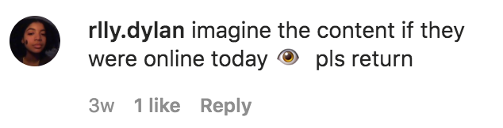
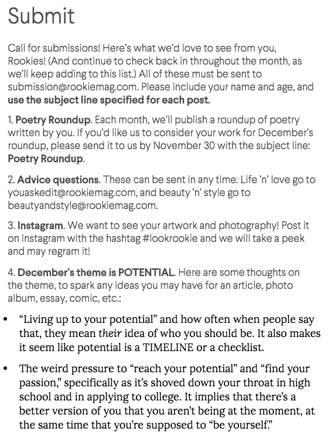
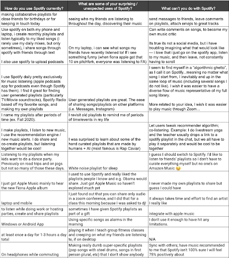

The Temple to the Cyborg Goddess is a sacred space online for diverse technologist artists to gather and share ideas about visions for the future of media. The space steps outsides dominant frameworks of social media design by embracing various forms of engagement not driven by profit and attention. Community activities include livestream gatherings, interactive virtual exhibits, and other forms of collective building and imagining.
A space to write and post intentions, hopes, dreams. These are ephemeral.
Writing a new note for the Wall of Intentions.
Weekly Ritual (livestream gathering)
Weekly gatherings could be book discussions, concerts, panels, etc.Cards from the Wall of Intention will be virtually “burned” at the weekly gathering.
Ephemeral Salon
Members can post in-progress work and ideas and get feedback
“To read Rookie was to be seen and to find a place where perhaps the most affirming comment section on the Internet empathized with conflicting feelings. Through personal stories, illustrations, photo essays, interviews, and experimental media, young people’s formative insights into identity and growing up were treated with validity and care instead of condescension and preachiness. Rookie cultivated a rare space where readers could examine what it means to be a person in their own small worlds and in the wider world around them.” [1]
Rookie was an online magazine for and by teenagers (you can check out the archive here!). It was founded by Tavi Gevinson in 2011, and thousands of articles, essays, poems, advice columns, stories, diary entries, interviews, photos, illustrations, comics, collages, playlists, and videos were published in 87 digital issues until 2018. I don’t remember exactly how I discovered it, but I definitely luckily stumbled upon it through the Internet. I do know that it felt like a distinctive, concrete place that I wanted to be a part of, even if only by reading. Rookie was shut down in 2018 ultimately not because of a lack of community or readers, but because Rookie’s model (which I will argue, helped make it a healthy community) was not financially sustainable. Digital media publications are in a difficult situation now in 2020 – some may ask what the point of maintaining an online media publication is when posts can be shared and community can be created through social media? Rookie had a conflict between growth and money & creative control and community. However, the publication was good at maintenance and stewardship [which unfortunately is usually not valued in a capitalist industry]. Social media has not quite replaced what Rookie did so well. It’s easy to see how big of an impact Rookie had on its community by reading the comments on the final editors’ letter or odes in variousother publications and posts on social media about “the end of Rookie”. As we are all quarantined, people are returning to Rookie’s archives and Rookie’s final Instagram post to comment that they miss it and wish it existed right now. Rookie was a place free from marketing and self-promotion and commercialized wokeness, where (any teenager, but mostly those who did not identify as male) could fully explore and be themselves and ask weird questions to other humans, rather than to Google. It was not perfect, but it did not expect its readers or writers to be perfect either. I am going to explain how Rookie managed to do this, which in turn is what made Rookie a healthy online community:

April 2020 comments on Rookie’s final Instagram post (from November 2018)
Content – “the perfect mix of funny/loving/dark/angry/kind/sincere/visually pleasing” [2]
Rookie’s content was created by and for the community. Content topics ranged from an interview with Lizzo (before she was popular in the mainstream) to the importance of being awkward, to dealing with grief, to fashion hacks, to growing up. Rookie did not talk down to its audience – it did not tell young people to wait their turn, did not belittle the experiences of young people, and did not not tell young people to idolize anyone or feed the cult of celebrity to them. Adults who contributed content did not talk down at all to the mostly teenage audience. Everyone was met on their level, as a person. People (mostly teenagers and young adults) were open and honest about their experiences. There were few interviews with celebrities (look at the main pages of Seventeen and Teen Vogue and you will see the difference immediately). “Normal” people’s stories had exactly the same weight as those of people who are more heralded on other platforms.
There was smart, intellectual content and vulnerable pieces and tons of q & a’s and guides to fashion and makeup, and none of those categories were mutually exclusive from each other. The site definitely had more of an exploratory rather than expert vibe, and reading each piece felt like receiving advice from a friend. I was able to read about other people’s lives, but in a “peering through a window into what makes a person who they are” way rather than in a self promotional, “please look at what I am doing” way. The content was a way to approachably learn from people who may have been a bit ahead of you in life, but were not leaps and bounds away. If someone not from the intended audience was on the site, I think that they felt like they had to respect boundaries and learn.
Importantly, Rookie also was not the news. Articles leaned more toward digested or detailing experiences in-process rather than immediate reactions to something. Since people would share mistakes they had made or learned from, and would validate others’ experiences, no matter how small, the website felt like a safe place where it was ok to be vulnerable. Tavi shared this quote in her final editor’s letter which reflects this: “I get a visceral reminder of how it felt to be in middle school, when I wondered if other people shared my fears, insecurities, ambitions, weird habits, enthusiasms. If I would ever meet them. The fact that this is no longer a question in my mind makes me feel utterly spoiled. That is thanks to you, and it means more than I can say.“ [2]
Site layout in February 2014
Content for people, not consumers
Rookie was created in direct opposition to how other teenage magazines marketed to young people, which made them feel “seen as a consumer rather than a reader or person”[2]. There was minimal advertising through banner ads at the top of the page and the side of the page that did not intrude upon the reading experience. The advertisements were selectively curated and did not seem to rely on user tracking – for example, I remember seeing numerous ads of book titles. Unlike other magazines owned by media conglomerates, Rookie had no airbrushing of models (and no models at all) and no pages of (expensive) products that readers should buy. Beauty and style were covered on the site, but not to make the site money through commissions through clicked links or purchases or make a reader feel like they needed to be something or meet a certain ideal.
“I was a teenager living on a tiny island, and reading your articles and finding out that there were people out there who thought like me, who thought about so much more than me, really shaped who I became. I never made friends through Rookie; I never had any submissions posted; I never drew from it to launch my own artistic brand. But Rookie encouraged me to think more, to be more creative and introspective, and to consider things that were so much bigger than myself.” (comment on [2])
Being its own site
I think this is actually a really powerful decision design wise, because it serves as an explicit reminder of the norms of the community. On Twitter and other social media platforms, different subcommunities may have different norms, but there is no guarantee that people will not behave in different ways since the community is not contained and anyone can enter the community at any time without a clear boundary. Also, the norms of the broader platform can supercede community norms. Many new “publications” are now hosted on blogs like Medium. However, Medium explicitly encourages content to be seen by as many eyeballs as possible. Rookie’s content was not really intended to be shared on social media or be promoted somewhere else or to receive 1000000 views or result in fame or etc. It was written for the community that knew where to find it and would be excited to receive it. Rookie writers contributed pieces to help contribute to a whole, rather than pieces that would exist individually across the Internet.
Amount of content and theme of site
Only 6 articles were uploaded per day, and each month had a different theme. Tavi would write an editor’s letter for each theme, and prompts to spark ideas of what to write about were provided on the submit page. The recommendations for content to read was inherently all of the content that was published by design. The editorial staff shaped the vibes of the site, not a ranking system through user engagement with algorithms.
The 6 final issue themes
The submit page
The structure of the website
Rookie truly felt like a place to go to, unlike the bottomless pits of social media platforms. Although the site only had a comment section and no other avenues of direct communication, it still felt like a community. The website was content-driven rather than user-driven — the intent of the website was not to meet other people (although people did venture outside of the bounds of the website and become friends, especially if they became writers), but to share and process life together. No followers, likes, or other metrics existed on the readers’ UI. The content was not showcased by what was popular right now, but by what was released each day.
Each piece had a series of tags at the bottom – you could click on a tag and see other content filtered by the same tag
Empowerment by showcasing teenagers’ work
A lot of writers have said that Rookie was the first place where their work was published. They felt validated as writers, artists, and creators. Rookie paid writers if their work was published, but because everyone should be paid fairly for their work regardless of their age. Money was not the main incentive to publish. People wrote because they related to the content and wanted to share their own art and experiences with other people too. Rookie gave teenagers a platform that did not exist otherwise. From an ID article: “As editor, Tavi showed young women that not only their voices and opinions were valued, but there was a place for them to thrive and create. She opened up worlds that had previously existed behind closed doors, accessible by the very few. Many women now in their 20s witnessed Gevinson’s rise during their own teens and thought, ‘maybe I could do that too’. During its seven year tenure, the site launched and nurtured countless creative careers, and inspired many more.”[3]
Some caveats
Rookie felt non-exclusive as a reader, but was kind of exclusive in terms of publishing content due to the constraint of only uploading a certain number of pieces each day. Rookie had a fairly defined aesthetic, which contributed to the uniqueness of the site, but could be viewed as an ideal standard that had to be met by submissions. It became increasingly inclusive and intersectional over time, but it may not have been that way in its beginning stages. I was too intimidated to contribute despite being inspired by the community. Some of the features that helped establish the community were a result of the gate-keeping roles.
This quote is nice and describes how the Rookie readers themselves helped create the community simply by being themselves: “Besides, that next iteration of what Rookie stands for—the Rookie spirit, if you will—is already living on in you. You’ve made friends with each other. You’ve made your own zines, blogs, clubs, collectives, bands. … You didn’t need Rookie or me to do any of that, but maybe we gave you an extra nod of encouragement. You felt bad one night and read an article on here and then you felt better.” [2]
Ian Ardouin-Fumat, Karyn Pugliese, and Shivangi Dave
Background & Research:
Initial concept
Street protest is a potent form of dissent, used across history and geography as a tool for progress and social justice; it directs public attention and persuades political actors to change course. In this way, while protests are subversive, they are also integral to democracy in expressing opinions, desires and demanding accountability. As noted by Mols Sauter in The Coming Swarm (2014) if civil disobedience and disruptive activism are valuable tools of activist speech and political discourse in the physical world, then it must also be acknowledged that they should be equally valuable and desirable in the online space.
Protest events in the physical world have become compromised by the COVID-19 pandemic and the global quarantine experienced all over the world. However, while it may no longer be safe to protest on the street, the causes that inspire activism have not gone away – the climate emergency, undocumented people, the struggle of women and victims of domestic violence, the labor rights of essential workers, and the protection of ordinary citizens against government surveillance.
However, these protests lacked an important element of disruption. The hashtags and videos are easily ignored by those in power, Yandex erased the protestors pins saying they had nothing to do with traffic reports, which is the purpose of the app.
But if there’s no public space on contemporary internet, how do we facilitate dissent and uncomfortable conversations?
As patience fell with social distancing, the forced shut down of non-essential businesses and related economic impact due to Covid-19; some real-life protests have erupted. (Nicholas Bogel-Burroughs and Jeremy W. Peters, ‘You Have to Disobey’: Protesters Gather to Defy Stay-at-Home Orders, Associated Press, April 16, 2020). However, the events were widely interpreted as a minority view, dangerous to public health and public good. In the case of Ontario Canada, the Premier Doug Ford dismissed the protestors as unintelligent, immoral and “a bunch of yahoos.” (Ryan Rocca, “Bunch of yahoos’: Doug Ford blasts Toronto protest against coronavirus-related restrictions Global News, April 25, 2020) Facebook subsequently removed a number of posts attempting to organize similar events. Brandy Zadrozny, “Facebook removes some events calling for protests of stay-at-home orders” NBC News April 20, 2020)
It is unsafe to protest in public space, there is little sympathy for those who attempt it and considerable backlash, and the means of organizing gatherings is being restricted by the public platforms in the time of COVID 19?
We began the project by asking: In reaction to this crisis, can we take social movements online?
The original concept was to create an app called “Walk Out” which mimics a real-life street protest online in some ways. When starting the app, users would be required to fill two pieces of information: the domain name they would like to target, and an avatar or emoji to represent their presence online. The app would load the URL entered, and this page becomes the protest space. The page would be augmented as a chat room populated with other individuals represented by free-floating emojis. Every participant could move around, chat with their neighbors, write slogans and amplify those written by others. This activity would generate traffic against the targeted website. But beyond mere disruption, it would create a space where deliberation and a sense of communion is possible. The drawback to this is that it may be too similar to a Denial of Service Attack (DDos) under US and state law.
In 1994, the Computer Fraud and Abuse Act (CFAA) was amended to make it a crime to cause “the transmission of a program, information, code, or command to a computer or computer system” and damage a computer, network, data, information, or a program. This section applies to DDoS attacks which involve transmitting a code used to turn computers into zombies, and code directing zombie computers to hit a site, which causes the denial of access. (Brenner, S. Cybercrime and the Law pp 49-50)
Two states, Ohio and South Carolina statutes criminalize the act of preparing to commit a DDoS attack event if the act itself is never carried out, although neither state has applied the law yet. (Brenner, S. Cybercrime and the Law page 52)
Nevertheless, those prosecuted for DDoS attacks face potentially high sentences and have been convicted. Anonymous activists were sentenced to several years in federal prison and hundreds of thousands in damages, for running DDoS tools for less than a minute. An attack known as Operation Payback resulted in 14 individuals being charged under the CFAA. Potential sentences for DDoS actions in the US are high compared to other crimes and especially compared to other types of traditionally recognized activist activities: a sit-in would typically result in charges of trespass, if anything. (Mols Sauter, The Coming Swarm, 2014)
The other issue to consider with such an app is that it is limited – only people accessing the website and the owners of the website are aware of the protest. One criticism of DDos attacks that also applied to this concept is that the site being targeted may not have a direct relationship to the problem advocates wish to address.
Finally, contemporary web technologies mitigate the risk of denial of service. So much so that it would be impossible to generate any disruption without artificially amplifying the traffic generated by a DDoS, which would cross a legal and ethical line. In the introduction to the Coming Swarm, Ethan Zuckerman asks: if there is no public space on the Internet that forces us to hear voices we would normally choose not to hear, how can facilitate dissent and uncomfortable conversations? (Ethan Zuckerman in Mols Sauter, The Coming Swarm, 2014)
Research and Consultations
No member of our group considers ourselves an activist, and we explored academic and news sources exploring activism and social dynamics including: Gabriella Coleman, Hacker, Hoaxer, Whistleblower, Spy: The Many Faces of Anonymous (2014); Doug McAdam, Recruitment to High-Risk Activism: The Case of Freedom Summer American Journal of Sociology 1986 92:1, 64-90; Evgeny Morozov , To Save Everything, Click Here: The Folly of Technological Solutionism (2014); Clay Shirky, The Political Power of Social Media Foreign Affairs January/February 2011; Malcolm Gladwell and Clay Shirky “From Innovation to Revolution: Do Social Media Make Protests Possible? Foreign Affairs March/April 2011; “Gladwell vs. Shirky: A Year Later, Scoring the Debate Over Social-Media” Wired (December 27, 2011).
The literature does not offer a recipe for online activism, but a divergency of methods which range in legality, legitimacy, and effectiveness. Social media can be used for organizing for real world actions, conversely, move real world movements completely online – as is the case Hong Kong, where Grand Theft Auto V became the battle ground. (Isaac Yee, “Grand Theft Auto V becomes latest battleground of Hong Kong protests” CNN Business December 27, 2019)
Zeynep Tufecki’s book Twitter & Tear Gas is enlightening on this last point, in two ways. First Tufecki acknowledges that digital tools are great at amplifying movements in their most visible phase, but because they afford to skip decade-long movement building work, they also make social movements more fragile and less resilient. Second, the book highlights how digital tools are not mere standalone tools of amplification, but can also provide support during the many, diverse stages of a social movement (from shared awareness to logistics, to mobilization and deliberation). The use of digital tools must be done in conjunction with a myriad of other tactics/tools.
For the project it raised questions of what problem we are trying to solve and for whom? Would we design for a specific group? At what stage of social organizing is online most useful? Is it the near the beginning, where those with a common cause are seeking each other out? Or for those at a more organized stage, where they are already involved in social activism as a group?
To get specific ideas and feedback there was a need to approach activists who have been operating recently but shut down by the pandemic, which included Yellow vests in France and Hong Kong protesters, movements in India and Indigenous activists #IdleNoMore #ShutDownCanada and Families of Sisters in Spirit (a group dedicated to drawing attention to Missing and Murdered Indigenous women who use the acronym and hashtag #MMIW.) Ultimately for time and practicality, the Indigenous groups were chosen.
Missing and Murdered Indigenous Woman (MMIW)
This group has changed names throughout the years, known first as Stolen Sisters, later as Sisters in Spirit, but commonly associated or known by the acronym MMIW or MMIWG (where the G adds girls). The movement began in Canada in the early 2000s in BC, when young women, mostly Indigenous with the sex trade began to go missing in Vancouver BC and female hitchhikers disappeared along a 725-kilometre corridor of Highway 16 that connects Prince George and Prince Rupert, British Columbia. This has been dubbed ‘the highway of tears.” Families of the missing and murdered began to suspect that a serial killer could be at loose. They had little support from the police or media, so began organizing a series of vigils and marches to create pressure. Amnesty International and a Indigenous lobby group, Native Woman of Canada Association (NWAC) became involved and began tracking disappearances of Indigenous women across Canada and the solve rate of cases. The number documented grew to an estimated 4,000 missing or murdered women, generated media attention and led to provincial inquiries in BC (2010-2013) and Quebec, plus a National Inquiry. It was determined that the rate of homicide for Aboriginal females was almost seven times higher than other females, and were far more likely than other women to go missing.
Red dresses were a meme associated with the movement in Canada. As the movement spread to the US, the meme changed to handprint over the mouth, combining traditional face-painting with an image of silencing. The colour red may evoke the image of blood, but those within the movement say red was chosen based on traditional knowledge that it is the colour spirits can see.
In the US the movement is still gaining grounds and working to create political will to address apathy toward the conditions causing violence and justice for victims. In Canada the movement strangely stalled after the Inquiry report. Families received some compensation; however many are still frustrated by cases that remain unsolved and little news of any progress on the 231 recommendations of the National Inquiry. Canada is supposed to develop an action plan by June 2020.
#IdleNoMore
Idle No More is a grassroots protest movement, founded in October 2012 by four women: three First Nations women and one non-Indigenous. It began with teach-ins, then direct action. The original target was a piece of omnibus legislation known as Bill C-45 which included provisions to deregulate environmental protection on waters, and to make it easier to surrender reserve lands for development. Indegenous people understood both provisions to be an attack on treaty rights and actioned without consultation of Indigenous peoples as required by Treaties. Hundreds of protests in the form of round dances, marches beginning in November 2012. They continued after the government passed Bill C-35 into law in December 2012, but road and railway blockades and hunger strikes were added to the actions. There was a cooling down after January 11, 2013 when Prime Minister Harper met with a small number of elected First Nation leaders and promised to work on addressing some of the issues raised. #IdleNoMore then returned to its original form of teach-ins and education until January 2020. At that time #IdleNoMore resurfaced publicly in the form of marches, protests and blockades to support traditional chiefs in a remote BC community, Wet’suwet’en. The traditional chiefs have opposed construction of a pipeline across their territory for years, but in January the RCMP, Canada’s federal police force, were sent in to execute an injunction to remove their long-standing blockade so that construction could proceed.
#ShutDownCanada
#Shutdown Canadais closely related to #IdleNoMore. It arose in January 2020 and is more emblematic than official in its differentiation. Those using the hashtag #ShutdownCanada were engaged in and advocating blockades of railways and highways and favoured these actions over marches and less disruptive expressions of discontent.
Feedback from selected activist groups
The organizer of Sisters in Spirit Eastern Canada, a branch of the MMIW movement was contacted. She felt that their issue had been forgotten, police investigations of MMIW had not picked up, and that government was no longer communicating with families as to what actions it would implement from the inquiry: “I am still fighting for justice Karen [sic] ❤ National Inquiry did not help families with Closed Cases. It’s been so triggering with all this police violence going on…Only families who testified got $3500 for healing…what about the rest ?” While she expressed a need to recapture media attention and apply pressure on police; she did not see how social media could help.
An artist who has been active on several Indigenous issues including MMIW, Child Welfare and IdleNoMore appreciated the idea of online protests but did not think they were effective as they had no teeth. Looking at the proposal she commented: “I don’t think I have anything at this point to add. This isn’t my area of expertise and I personally find limits in online protests but that seems to be where humans are headed in general. Looking forward to when people can get out again.”
Others within the #IdleNoMore movement have expressed concern that while public posting and sharing on social media such as Facebook and twitter has been key to recruitment and organizing actions, it also allowed police to monitor their movements and create profiles of key advocates. Andrew Crosby and Jeffrey Monaghan, two Ottawa-based researchers used access to information requests to collect thousands of pages of government communication and police surveillance of IdleNoMore. When IdleNoMore resumed direct action in January 2020 they tried organizing by phone, asking individuals to volunteer to contact others on a 30-member call list to keep them informed of actions in an attempt to recruit out of the public eye. The concern surrounding the need for privacy from police surveillance and counter movements; while also needing a broad platform to recruit and build alliances has also been expressed by other advocacy groups.
A person connected to #ShutDownCanada named their biggest challenge as the moment where police move in to arrest those taking direct action. As actions go one, people tend to disperse leaving a small group to carry on a blockade. Very specifically he imagined an app that would alert everyone in the community to rush to the site when there is danger, violence or police action. The idea that the app could be used to alert people to other dangers like a robbery or an assault on a female was also suggested. “It should send out a notification to everyone within a certain radius who could respond quickly. Maybe first second third wave response graduating out in distance.” After some research it was determined an app that fulfills most of these requirements already exists.
Problem statement:
We found some commonalities among the groups, but particularly the issue impacting #IdleNoMore regarding communication. Activists are using public social media channels to organize and recruit others to their cause, but working in public also alerts the institutions they are rallying against to their plans. Essentially what they need is a private conversation in a public space, a way to alert select people to an action.
How might we create a means for activists to have a broad reach in organizing and recruiting supporters on the social media platforms. Could this communication also disrupt public space and create curiosity that would aid recruitment, and possibly draw media attention?
Solution
Concept: Code Talker
We created a plug-in that uses Facebook, which is the social media platform most preferred by the groups we consulted for organizing events. The plug-in allows the user to post a message that is encrypted on their public Facebook page. Only those others who also have the app installed and who are selected as friends by the original poster can see the decoded message. Everyone else sees only the encryption. To gain access, people download the application, and use its interface to add contacts and share content.
Two Facebook friends add each other on Code Talker in order to share encrypted content
While encryption tools usually focus on private conversations, Code Talker introduces a degree of privacy in open Facebook conversations. It decouples people’s content from the platform where it is hosted, as encryption happens right before a message is posted. Besides, it uses the encrypted message as a viral vector, by including a short prompt that invites non-users to join the conversation by downloading the tool.
Code Talker’s interface enables people to write encrypted Facebook posts
Under the hood, Code Talker relies on attribute-based encryption, a generalized version of public-key encryption. While public-key encryption is suitable for one-to-one conversations (e.g PGP, Signal), it is not viable for the kind of conversations people have on open social media platforms: among many issues, maintaining knowledge of contacts’ identities is cumbersome, and newly added friends can’t access content retroactively. In contrast, attribute-based encryption offers granularity in levels of trust between contacts, and backward data access. In the past, researchers have implemented attribute-based encryption systems applied to social media platforms, but they were assuming the platform would play along. In our case, we use this technology in an adversarial way.
We called the app Code Talker, after a term used in WWII when Indigenous soldiers spoke their language over military phone and communications devices to transmit secret messages. This kept enemy forces from intercepting messages. Their language was thought to be code, and the Germans called it ‘the unbreakable code.’ The soldiers were called ‘code talkers.’ For this prototype, we used the Navajo Code Talker military patch as reference for the application’s visual identity.
Use scenario
As monitoring peaceful protests and increasing criminalizing activities that were once allowed has become an issue in Canada since 9-11 (Paul Weinberg, “Policing of dissent, from the G20 to the Wet’suwet’en dispute” in CCPA pp 29-35) where the activists work the need for privacy in organizing has increasingly become a concern. It is a concern that is shared by other groups, for example protesters in Hong Kong could equally benefit from this type of application.
So for example IdleNoMore who regularly used Facebook to post messages, turned instead to a phone system in January when they began to organize support for Land Protectors in on unceded Wetʼsuwetʼen land in British Columbia, Canada. They organized ‘callers’ to keep 30 other activists notified, individually, by phone or text as to activities. This was an attempt to reach people without being monitored.
Indigenous activists will be able to transmit messages to each other using the public space; which is important to attract attention of other like-minded people for recruitment. It also offers some security against authorities or the establishments they are targeting intercepting or monitoring the content of the messages.
Now, with Code Talker they could post the event on their Facebook Page, reaching more people more efficiently in a public space, but keeping all details out of the public eye; revealing the messages only to those they trust.
In disrupting the public online space Code Talker also generates attention, media and others who follow high profile activists will know an action is being planned, and this will attract curiosity whether or not the content of a message is made available to them.
Next steps & Challenges
Indigenous activists will be able to transmit messages to each other using the public space; which is important to attract attention of other like-minded people for recruitment. It also offers some security against authorities or the establishments they are targeting intercepting or monitoring the content of the messages.
Feedback suggested adding a provocative image or meme to the coded text to make it more eye catching and intriguing. We’ll work on incorporating this idea.
Ethical challenges
We will need to be attentive to the risks users might face, so we can provide them with clear, actionable information. Just like in their real life counterparts, participation in online protests carries risks and requires well-informed decisions from all parties involved. For example:
Someone may crack the encryption. A key may be given to someone who should not have it. We need to warn users that they should still be thoughtful about what they are sending as nothing is 100% secure.
This may violate Facebook’s terms of agreement, and as a result if they do not like what the plug in is doing, they may kill it or suspend accounts. We need to warn users that this could happen. It is our hope it will not, or that it proves useful enough to Facebook’s users that the company accepts it.
Another consideration is that Code Talker could be used by groups with malevolent intent, such as white nationalists, terrorists or extreme” tactics by protestors – for example, blocking traffic, vandalizing property. However, because it only works in a public space, is designed to attract attention, and other software offers more private forms of communication, we feel the design of the App will be a deterrent for such users.
Code talker is envisioned for activists to whom disruption is the greater goal. As noted by Mols Sauter in The Coming Swarm (2014), for a protest action to attract sympathetic media attention, it must however look like what the media expects a protest action to look like. If such a tactic is seen as illegitimate (for example the way the media interprets DDoS attacks) the media could fail to recognize a given action as activism and cover only the novelty, spectacle, and criminality deployed.
Legalchallenges
This project is rooted in civil disobedience, and we considered possible legal implications. Any program involving malware which introduces a contaminant into any computer, computer system, or computer network is criminalized under Federal and State U.S. law.
Denial of services (DDOS) attacks are criminalized under the Computer Fraud and Abuse Act, and individual states also have laws which criminalize DDOS attacks and other cybercrimes by criminalizing code that is designed to modify, damage, destroy, record, or transmit information within a computer, computer system, or computer network without the intent or permission of the owner of the information or the use of zombie computers. (Brenner, S. Cybercrime and the Law pp 41-49)
Code Talker may ultimately be found to violate the Facebook Terms of Service, however it does not seem to violate the current terms of service which only prohibit unlawful, misleading, discriminatory or fraudulent or viruses or malicious code or do anything that could disable, overburden, or impair the proper working or appearance of Facebook products. (see Facebook Terms of service)
Technical
Because it operates in a hostile environment — Facebook’s user interface, Code Talker faces several technical and security challenges.
First, it is threatened by the HTML obfuscation that Facebook uses to make scraping difficult on their website. This risk is thankfully alleviated by their compliance with the W3C’s Accessible Rich Internet Applications specification, which makes their HTML pages somewhat readable by software that’s designed with resilience in mind.
Second, because Facebook decides how content gets displayed, we can’t rely on mere scraping to identity and validate contact requests. This means we need to implement an external contact verification system that validates users are the legitimate owners of their Facebook accounts, via email or timestamp pictures.
Third, and most insidiously, Facebook’s ability to deprioritize content that appears programmatically manipulated might limit the flow of encrypted conversations.
Practical
Other significant challenges are the practical ones: successor systems inherently add a layer of complexity on existing interfaces. In our case, adding a degree of privacy to Facebook will add some friction to people’s user experience. For instance people might have to download a CodeTalker app to replace their Facebook app on mobile devices. Will these frictions deter people from using the tool altogether? What online rituals might we break? How about people who can’t use Code Talker and might end up being marginalized because they can’t read their communications anymore?
Selected Bibliography
Brenner, S. (2012). Cybercrime and the Law: Challenges, Issues, and Outcomes. Boston: Northeastern University Press.
Coleman, G. (2014). Hacker, Hoaxer, Whistleblower, Spy: The Many Faces of Anonymous.
Mcadam, D. (1986). Recruitment to High-Risk Activism: The Case of Freedom Summer. American Journal of Sociology, 92(1), 64-90.
Sauter, Molly (2014). The Coming Swarm. Bloomsbury Academic.
Schwartz, M. (2011). PRE-OCCUPIED. The New Yorker,87(38), N/a.
Waisbord, S. (2018). Twitter and Tear Gas: The Power and the Fragility of Networked Protest. Social Forces,96(4), E3.
Many platforms that enable connection and bonding despite physical location already exist; separately, many music streaming services are already in operation. However, few platforms bridge the gap between music and social connection, despite the many opportunities for bonding and sociability that music can create. In order to bridge this gap between music and social connection via distance, we propose an extension to Spotify which allows multiple users to stream the same playlist of songs simultaneously. The primary purpose of this extension is to create a new avenue for social connection and deepening community through music, especially for groups dispersed across large distances or who are otherwise unable to be physically together. In this paper, we survey relevant findings from existing literature on the Spotify platform, identify a need for sociability and agency, formulate four use-case types to our proposed extension, then conclude by discussing its limitations, implications of its use, and future directions for its design as an intervention into music and social spaces of a connected world.
Concept Overview
House Party is an extension that runs on top of the Spotify platform that may be used on either a computer or a smartphone. This extension allows multiple users in different locations to stream the same playlist of songs simultaneously. This extension does not alter the core functionality of Spotify, but rather builds onto Spotify’s existing features to improve the app and give users a new experience within a familiar platform. The primary purpose of this extension is to create a new avenue for social connection and deepening community through music, especially for groups dispersed across large distances or who are unable to be physically together for any reason.
Design Audience
The intended audience for House Party can be summarized as follows: They are Spotify users from age 15-30 who value music, emotional and social connection with others, and agency and diversity in their musical selections.
Although any Spotify user could certainly successfully download and use the extension, House Party will specifically be designed with younger Millennial and Gen-Z users of the platform (around age 15 to age 30) in mind, as they are more likely to have the habits, interests, and technological savvy that would make this product desirable. Furthermore, the Spotify user base already skews toward this younger demographic, as a 2018 Goodwater Capital survey found that Spotify is the most used music streaming service for people under the age of 30.1 House Party will not target users based on gender or location, though it should be noted that the existing Spotify user base is overwhelmingly American and European (over 65% combined), with Latin America comprising a significant minority (22%) and users from the rest of the world totaling 13% of the user base.2
These Millennial and Gen-Z users are used to being in constant connection with friends, family, and other groups with which they identify. From social media such as Instagram and Twitter to text messages to large-scale social events such as concerts and sporting events, our target audience enjoys both physical and digital interaction with others. This is especially true of interactions with friends, significant others, and other close relationships – Event Manager Blog reports that millennials are more likely to attend an event if they can do so with friends,3 and these findings appear to map onto digital activities as well. Though many forms of digital interaction already exist with great success, few music-centric platforms have social functionality, despite scientific evidence that listening to music together can play a role in closeness and connection.4 This is especially troubling in the age of a global pandemic, where large-scale musical gatherings like concerts and festivals are postponed until further notice, and even small-scale gatherings of friends are prohibited (or at the very least unwise).
Beyond its connecting capabilities, Millennials and Gen-Z users value music on its own: A 2018 survey by digital media company Sweety High found that 94% of Gen Z respondents cited music as “important” or “very important” to their lives,5 and a 2017 report by Spotify states that 3 out of 4 Millennials say music is part of how they define who they are.6 Both generations tend to have musical tastes that span across genres, with songs from multiple genres often played in succession within the same listening session.7 Therefore, while “old-school” options such as radio, or recent developments in live-streamed concerts and festivals, allow for connection via music despite distance, these avenues often lack the musical diversity our target audience desires. Furthermore, users have no agency in the artists or songs that are played, despite the fact that ⅓ of user time on Spotify is spent listening to user-generated playlists, suggesting a desire to be in control of or influence the musical selection a significant portion of the time.8 Data from our own pilot survey of music streaming platform users, all of whom fall into Gen Z and Millennial age groups, correlated with these findings, as most respondents indicated a strong interest in having agency in the types of music they listen to, as well as in their experience of the platform in general.9
Background Analysis
Many platforms that enable connection and bonding despite physical location already exist; separately, many music streaming services are already in operation. However, few platforms bridge the gap between music and social connection, despite the many opportunities for bonding and sociability that music can create.
While social media platforms have become nearly inumerable, a few stand out as major players. According to Search Engine Journal, the seven most popular social media platforms in 2020 are (in order) Facebook, Twitter, LinkedIn, Instagram, Snapchat, Pinterest, and Reddit.10 All of these platforms allow for varying degrees of social connection across distance, often through direct messaging users, posting updates through statuses or stories, or commenting on posts. Some platforms even engage music directly – some notable examples include Instagram’s ability to add clips of songs to Stories, as well as Facebook groups and subreddits dedicated solely to discussions of a particular band. However, these capabilities remain somewhat limited: Instagram Stories only allow up to 15 seconds of a song to play at a time, and threads discussing more popular bands can often be large and unruly, involving hundreds or even thousands of users and therefore missing the intimacy of a conversation between friends or a few die-hard music lovers.
Many music streaming services exist as well: Goodwater Capital classifies the major music streaming platforms as Spotify, Pandora, Apple Music, Google Play Music, Amazon Music, and Soundcloud.11 Of these, Spotify, Apple Music, Google Play Music, and Amazon Music function quite similarly: They all allow users to search and stream music, create their own playlists, and browse pre-generated playlists often based on algorithms. Pandora, meanwhile, does not center itself around playlists but rather generates a continuous stream of music based on a user’s initial input of one or multiple artists or songs. (It should be noted that Pandora does allow some playlist functionality, but this is only available with a Premium membership, which costs $9.99 per month; neither the Free nor the $5.99 Pandora Plus memberships allow users to create their own playlists.12) While Soundcloud does allow the creation of playlists for all users, the platform focuses primarily on the relationship between artists and their fans, allowing users to comment directly within tracks13; it is also primarily used by artists who are not signed to any particular record label and therefore tend to have smaller followings. While this ability to form connections between artists and fans is important, it leaves little room for fans to connect with one another.
Therefore, from our survey of existing social and musical platforms, two important conclusions can be drawn: Social platforms offer limited ability to engage with music directly, and music platforms offer little opportunity to connect with fellow music lovers.
Intervention Rationale
In order to bridge this gap between music and social connection via distance, we propose an extension to Spotify which allows multiple users to stream the same playlist of songs simultaneously. The purpose of the extension is to allow for emotional connection and deepening of community through music, a function which both major social networks and major music streaming services are currently lacking.
Part One: Why Spotify?
A 2018 report by Goodwater Capital found that Spotify ranked highest in user satisfaction across multiple measures, among the major music streaming services Pandora, Spotify, Amazon Music, Apple Music, Google Play Music, and Soundcloud.14 Of these platforms, the report also found that Spotify has the highest percentage of users under 30 and ranked as a favorite among younger users.15 These stats are important for multiple reasons. First, because House Party functions as an extension of, rather than an amendment to, Spotify’s core functionality, it is important that users are already generally satisfied with their experience. Many survey respondents noted that they intended to maintain or increase their usage of the platform, and a common sentiment was that of using the service every day.16 These findings bode well for an extension that introduces additional functionality to an already well-loved service. Next, House Party’s target audience is younger Millennial and Gen-Z users aged 15-30. Since Spotify’s existing audience already skews toward and is a favorite of this age group, it is likely that they would be interested in an extension that builds atop a platform they already know and use.
Pilot Survey & Initial Findings
In order to further understand current uses and limitations to Spotify, we designed a pilot survey for an initial sampling of members from our MAS.S67 Fixing Social Media, at first with a small group of peers during our class, and later with the general mailing list after our class. The pilot survey consisted of three central questions: “how do you use Spotify currently?”, “what are some of your surprising/unexpected uses of Spotify?”, “what can’t you do with Spotify?”. We built the pilot survey to collect responses using Google Doc (in-class) and Google Forms (after-class), after which we imported each set of responses into a table. We then used MIRO, an online whiteboard for collaborative work, to code responses for themes using an approach to qualitative analysis resembling an open card sort, in which responses are cards to be sorted by categories to be determined through the sorting, rather than before the sorting. This approach not only allowed us not only to sort cards (responses) by categories (themes) as they emerged, but also map both first-order and second-order connections between cards across the different categories. Additionally, each response in a given set of responses was assigned one of three colors based on which of the three pilot survey questions it submitted as a response to. All of the responses were coded using the same categories, which included whether a given response mentions agency, mentions algorithms, mentions content, mentions platforms, mentions sociability, mentions device use, or mentions purpose. Cards mentioning several of these themes underwent an additional step, in which each of the categories interpreted were ranked by importance. These rankings determined placement of the card on a first category (most important), a first-order connection to another second category (second most important), as well as a second-order connection to another a third category (third most important), where the first-order connection is a line matching the color of the given card (blue, green, red) and the second-order connection is a line matching the color of all the categories (yellow). From this exercise, we found that agency, sociability, and purpose appeared most often in responses, and that most responses were traceable to sociability as either a first-order or second-order theme.

Figure 1: Table of pilot survey responses and qualitative findings from coding exercise.
Part Two: House Party’s Purpose
House Party’s purpose is to enable new forms of emotional connection and deepening of community through music, especially when that connection is not able to occur in the same physical space. This idea sprouted from an experience co-author Elon had while quarantined during the COVID-19 pandemic. Each week, she and a group of friends met over video chat to talk and play games. She was listening to music over her Bluetooth speaker, and her friends could vaguely hear the music through the video chat. Eventually, a song came on that everyone liked, and they all spontaneously began to dance – a dance party that spanned from Nashville, TN to Pensacola, FL to Incheon, South Korea, nearly 7000 miles total. After the song ended, the mood of the group had palpably lifted. This experience helped Elon realize how important music can be in creating bonds, and that it can be a useful tool in connecting people regardless of their location or ability to be together. This revelation inspired her, and she wondered how she might create something that allows groups to connect and bond over music – together, at the same time – even from thousands of miles apart. Thus, the idea for House Party was born, and with it its purpose to bring people together through music – from anywhere and for any reason.
The extension’s name, House Party, has a double meaning. First, it’s a tongue-in-cheek reference to the fact that people all over the world are confined to their homes during a pandemic, such as COVID-19; therefore, any party is quite literally a house party. Beyond this, though, House Party is meant to evoke the feeling of a more traditional house party – a highly social event that brings people together, in which the mood is kept up by music, and where any attendee can hear the same music as everyone else, regardless of their location in the house. Of course, it is worth noting that Houseparty, a video conferencing app, already has a markedly similar name; however, we believe that our extension is truer to the spirit of a house party, and that since it is a music-centric extension rather than a video-centric standalone app, it is sufficiently distinguishable from the Houseparty app.
Platform Infrastructure & Relevant Features
As a digital platform, Spotify relies on a technical infrastructure to sustain its functionality as a both an user application and as a media services provider. In particular, Spotify’s technical infrastructure is built with a microservice architecture, allowing each layer of its platform stack to remain at once maintainable and testable by both software engineers and product developers. In 2011, Spotify introduced Spotify App Finder, a service for third-party developers to create and host apps for use by members who had Spotify Premium. In 2014, Spotify discontinued this space for third-party developers upon introducing a Web Application Programming Interface (API), which it claimed would fulfill many of the advantages to App Finder. In this time, spaces for synchronous playback experiences had emerged on the Spotify platform, through the group listening rooms of Soundrop, a third-party app around which a community formed. However, because the App Finder API had been discontinued, Soundrop was forced to close. As a result of this closure, efforts to build open-source alternatives, such as Soundbounce, were soon formed yet inevitably relegated to remaining standalone players, in which Spotify Premium members have to log-in through a separate app, until Spotify enables developer support for apps in their Web player. In the six years since then, Spotify has yet to have made this decision.
As a digital platform, Spotify currently offers three features that are relevant to our proposed intervention. First, Spotify publicly allows synchronous “group sessions”, in which users can add songs to a shared song queue with a limitation of one device playback at any time. Second, Spotify publicly allows asynchronous “collaborative playlists”, in which users can add songs to a shared song list which multiple devices can playback at any time. Third, Spotify privately allows synchronous “social sessions”, in which users can add songs to a shared session, multiple devices can playback, and invite other users to listen along together at once, wherever they are. Despite this feature being most relevant to our extension, it’s only usable for Spotify employees.
User Journey & Use Cases
House Party is designed with two primary use-case-types in mind. However, we envision two additional use-case-types that could be implemented with additional functionality, perhaps in a subsequent update to the extension. The primary use-case-types can be characterized broadly as one-to-one and many-to-one, and the envisioned future types can be characterized as one-to-many and many-to-many.
Primary Use Case 1: One-To-One
In a one-to-one case type, a group of users are given access to a collaborative Spotify playlist. Users with editing access may add and remove songs in the playlist (as is currently the case with Spotify’s ‘collaborative playlists’ feature), but these users also all have the ability to turn House Party Mode on or off. When House Party Mode is on and a user hits play on the playlist, all users with access will receive a push notification to “Join the Party.” Any user who then tunes in will then hear the playlist simultaneously with other users. Anyone with access may queue up or skip songs, or play or pause the music. This will remain the case until House Party Mode is turned off.
A first imagined use case within this type is that of a party among friends, thrown over a video chat app such as Zoom or Facetime due either to distance or inability to congregate. Before the party, one friend would create a collaborative playlist and invite all their friends to contribute songs. During the party, each friend could hear the same music from their respective speakers as they chat, and any friend could skip a song, pause the music, or queue up a song they’d like to hear. A second imagined use case within this type is that of a couple in a long distance relationship who would like to feel connected to one another as they go about their daily routines. Each partner would contribute to a collaborative playlist with songs they both enjoy or that they would like to introduce to the other, and they would listen together as each partner gets ready for work in the morning.
Primary Use Case 2: Many-To-One
In a many-to-one case type, multiple users can access, edit, and control the playlist in the same way as a one-to-one case type. However, in this case, another user can stream the playlist without having these same privileges. Those with control privileges would access the playlist through the collaborative playlist function, and any of them may turn House Party Mode on, queue up or skip music, etc. The user without control privileges would access the playlist by a link, subscription, or search (if it is publicly searchable within Spotify). When House Party Mode is turned on, all those who are collaborators (with control privileges) and the listener (if subscribed to the playlist) would receive a “Join the Party” notification.
An imagined use case within this type is a group of friends gifting a Spotify playlist to another friend for their birthday. All those gifting the playlist would contribute to the collaborative playlist, and once it was complete the group would send a link to the playlist to their friend. The group would agree on a time to listen together, and the friend whose birthday it is would be delighted at all the songs their friends have chosen to play.
Future Use Case 1: One-To-Many
In a one-to-many case type, only one user has access to the playlist and therefore is the only one with the ability to add and remove songs, turn House Party Mode on and off, and queue up, skip, play, or pause the playlist. Other users may reach the playlist through a link or subscribe to the playlist (if it is publicly searchable within Spotify), but they cannot make any changes; however, those who are subscribed will receive a “Join the Party” push notification when House Party Mode is turned on. The “host” user can publicize the time they planned to stream the playlist so that other users knew the time to tune in.
Imagined use cases in this category are well-known local or national DJs compiling a list of songs for a Friday night quarantine dance party and artists hosting live listening parties for their new (or old and well-loved) albums.
Future Use-Case 2: Many-to-Many
Finally, a many-to-many case type would operate in mostly the same way as a many-to-one case type, except that multiple listeners may synchronously stream the playlist instead of one. As in the previous case, any user with control privileges can turn House Party Mode on and off, queue up or skip music, etc. Users without control privileges may access the playlist by a link, subscription, or search (if it is publicly searchable within Spotify). Furthermore, any of the host users may publicize the time they planned to stream the playlist so others knew when to tune in.
Imagined use cases in this category are groups of friends creating a playlist to stream to their wider friend circles and multiple artists co-creating and streaming a playlist for their fans.
Of course, House Party’s capabilities should not be limited to these particular use cases. Certainly, the extension’s target audience is known for their creativity and ingenuity, and there is no limit to the situations in which they can apply it. These use cases are simply a jumping-off point, with the four broad types serving to showcase the extension’s functionality in different situations.
Fig. 2: Mockup of playlist with House Party Mode turned on and a notification when another user begins a stream.
Intended Experience
As previously stated, the purpose behind this intervention is to create a new avenue for connection and community through music, especially in times when groups are unable to be together physically. The technical goal of the project is to successfully function atop Spotify’s existing user interface while providing users a new option in their experience of the platform. Success in reaching both of these goals may be measured in how well House Party meets several objectives. Objectives measuring success include the following:
Number of users who install the extension
Number of users who use the extension on a daily, weekly, or monthly basis
Variety of use cases in which the extension is implemented (determined by surveys)
Overall user satisfaction with the extension (determined by surveys)
Sense of deepened community and social bonding between users (determined by surveys)
Regularity of bugs or crashes which make the extension difficult or impossible to use
Legal or technical issues that arise with Spotify that make the platform inhospitable to the extension
Limitations, Implications, & Future Directions
Certainly, the House Party extension has a number of limitations, implications, and avenues for improvement. A major limitation of the extension in its current state is that it works best with Spotify Premium (which costs $9.99 per month)17 and would not work as well with Spotify Free. This is because Spotify Free users only have access to a limited number of song skips per hour and must listen to an ad after a certain number of consecutive songs.18 If users with Spotify Premium listened synchronously with a Spotify Free user, it is likely that the entire group would have to listen to the ads alongside them, and the Free user would be unable to access the full functionality of the House Party extension without the ability to skip songs. Another limitation is that House Party can’t access songs outside of Spotify’s existing library. This means that as far as the extension could enable sociability, the diversity of music itself would be determined by the catalogue of artists and albums made available through Spotify.
House Party brings foreseeable implications as well. First, the extension may further entrench people in the music preferences of their existing networks or the social groups with which they identify. We believe this concern could be resolved in part by using in-app prompts from Spotify that suggest music from music or artists outside the collective preferences at play when House Party mode is turned on. Second, this extension could become another way for trolls to access or to otherwise cause harm to communities. We believe this concern could be resolved in part through increased security around playlist link sharing such that when using House Party is in use and a playlist is shared with different listeners or users, they are brought into a waiting room before being allowed access to editing capabilities of the playlist. We believe implications like these have become part and parcel of designing social media, in a world where various online platforms have come to face nearly identical concerns in recent years.
Finally, a number of future improvements could be made to this extension. First is additional functionality that would allow our envisioned future use-case-types to be viable, as the extension is currently designed to work best on a small scale, likely with groups who know one another personally. Future improvements could allow the extension to scale up and work for mass audiences so that artists, DJs, or others with large followings could stream to all their fans at once. This could also include the addition of a comments feature, perhaps similar in form to Facebook Live, where listeners could make requests, reach out to the host(s) with comments, or discuss the music with other listeners. A second future improvement is that of an algorithm that enables the extension to do more of the work of ordering and fitting songs together in a playlist so the music flows together smoothly: Although the users would retain total agency of the songs within a playlist, the extension would reorder the songs for a more seamless listening experience. Of course, some users may feel uncomfortable with the use of an algorithm in any form, so this feature would remain entirely optional.
References
Understanding Spotify: Making Music Through Innovation, Goodwater Capital, March 15, 2018, https://www.goodwatercap.com/thesis/understanding-spotify#important-disclosures.
Mansoor Iqbal, “Spotify Usage and Revenue Statistics (2020),” Business of Apps, April 24, 2020, https://www.businessofapps.com/data/spotify-statistics/.
Kelli White, “How to Attract and Engage Millennial Attendees for Your Event,” Event Manager Blog, October 17, 2018, https://www.eventmanagerblog.com/how-to-attract-millenials-for-event.
Jill Suttie, “How Music Bonds Us Together,” Greater Good Magazine, June 28, 2016, https://greatergood.berkeley.edu/article/item/how_music_bonds_us_together.
Brittany Hodak, “New Study Spotlights Gen Z’s Unique Music Consumption Habits,” Forbes, March 6, 2018, https://www.forbes.com/sites/brittanyhodak/2018/03/06/new-study-spotlights-gen-zs-unique-music-consumption-habits/#22b9970d42d0.
Spotify for Brands, “Culture Next,” Global Trends Report, no. 1 (2019): 1-19. https://www.spotifyforbrands.com/en-US/insights/millennial-guide/
Spotify for Brands, “Culture Next,” and Brittany Hodak, “New Study Spotlights Gen Z’s Unique Music Consumption Habits.”
Mansoor Iqbal, “Spotify Usage and Revenue Statistics (2020).”
Data collected in pilot survey conducted April 29, 2020.
Kristi Kellogg, “The 7 Biggest Social Media Sites in 2020,” Search Engine Journal, February 3, 2020, https://www.searchenginejournal.com/social-media/biggest-social-media-sites/#close.
Understanding Spotify: Making Music Through Innovation.
“Music and Podcasts, Free and On-Demand,” Pandora, accessed May 2, 2020, https://www.pandora.com.
“Creators on SoundCloud,” SoundCloud, accessed May 2, 2020, https://creators.soundcloud.com.
Understanding Spotify: Making Music Through Innovation.
ibid.
ibid.
“Spotify,” Spotify, accessed May 2, 2020, https://www.spotify.com/us/premium/.
Henry T. Casey, “Spotify Free vs Premium: Should You Pay to Play?,” Tom’s Guide, March 28, 2019, https://www.tomsguide.com/us/spotify-free-vs-premium,news-24850.html.
Homecourt – A digital media platform serving offline social networking through basketball pick up games building upon the “HUPU” community
Overview
The problem “Homecourt” is addressing is that people nowaday are bound with their online social networks, which are weak relationships, and it’s hard for them to turn it into strong relationships in the real world. The offline world might not offer many chances for people to make connections with others in this age of online prosperity. Team sports are an exceptional medium that can often create strong bonds in social relationships. The act of joining a pick up basketball game is naturally an act of alliance which is one step closer to making friends, even if they might have different backgrounds.
Goals
Leading the online community towards an offline lifestyle through the medium of team sports (Basketball).
Strengthening the bond of the “HUPU” online community while promoting offline social interaction.
Creating an intentional healthy interaction and then sprawling a healthy sense of community.
Why HUPU?
Original Fanbase
The HUPU community is already a famous online sports community in China and has a mature online structure that encompass millions of loyal users for numerous years.
Cultural Significance
In HUPU’s case study, we found that the center bulletin board system (BBS) community has already accumulated a large group of loyal users who trust the community and the platform, but it’s still an online connection that does not promote a healthy community. On the offline aspect they officially held official high level basketball events and came out with some star players and have a lot of audiences. Star players have gained a huge following through online platforms such as TikTok and Chinese variety shows in recent years.
Flaws
Even though HUPU is quite successful, We feel a strong offline aspect for the community is necessary for a healthy community both physically and mentally. We want to connect “homecourt” with the community star players, the existing basketball discussion sector and the reputation or rating system with the community. Furthermore, it has the potential of growth and attracting users HUPU previously could not.
Specifications
Our Online to Offline (o2o) model is to use incentives to make people gather offline on the court and turn the online weak connection into offline strong connections in order to improve the healthy network within the existing community of “HUPU”. Our core philosophy is to make good use of the existing resources, supplementing and improving the vacancy of the offline part and contribute to the consolidation of the online community network.
Homecourt User Flow
How does it work?
The application would allow the online HUPU community to find, join, and create pick up basketball games in their physical ficinity. Continuing the credit system of HUPU, users can monitor each other for security/behavior and use these credits for benefits such as ball rental and prizes. Furthermore, fans get chances to meet and play basketball with community star players in the area.
To use the Homecourt app, the user needs to have a HUPU account and pass a test. The test can ensure the inheritance of the community culture and make users value this community more. To connect with the HUPU community, Homecourt is also located within the original basketball discussion section. Within the discussion sector, users can choose to access the BBS posts or the Homecourt application.
Map and short video are two main interfaces of the platform. Tik Tok style short video allows users to interact with digital media that showcase skills, player personalities and court settings. There can be small challenges to promote connectivity, like the 3 pointer challenge.
From the map, users can see the information and popularity of surrounding courts. Users can also find courts where star HUPU players are playing.
Users can create and join games using Homecourt. From the map, users can find people who usually play on that court. After the game, you can connect with them through the platform.
Create, join, find friends.
Short videos like Tik Tok is another good way for people to share their stories within the court. The most fire video can be put on the homepage of HUPU. Moreover, you can check out the vlogger’s information and the court where they made that video.
From the users’ profile you can see their reputation level, when did they join HUPU community and their credits. You can also chat with them and see the posts they made in the community.
Existing HUPU credit system as a security screening and communal monitoring system. To ensure the security and quality of the game, people can report others’ behaviors to make adjustments on their credits based on HUPU’s credit system.
Creating other physical and non-physical incentives to connect users with this platform. like the basketball ranking system or basketball sharing system which already exists in China; users may rent basketball for free using their credits.
Reflection
From the start of the research to synthesizing the prototype, we always felt a strong connection to the project because of our love for social media and team sports. The process helped us learn a lot about unique online communities and affirm information that are within our prediction as well. In a future where online social interaction will become predominant, especially after the COVID-19 crises, offline life will be a valuable commodity. Our project speaks to the basic needs of human socialization in a world that lacks interaction and communication. By using the medium of basketball, we hope to inspire a portion of the online community to come offline, thus strengthening the bond that makes a healthy online community as well as preserving the beauty of offline human interaction.